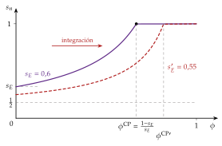
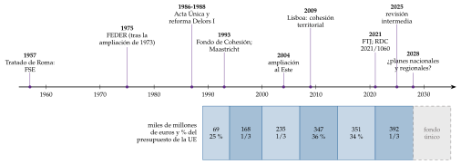
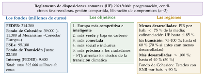
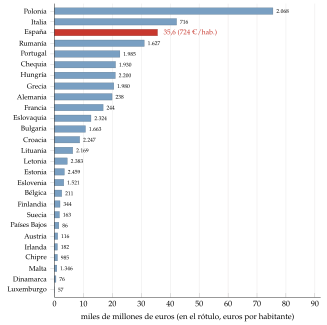
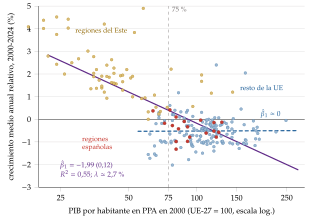
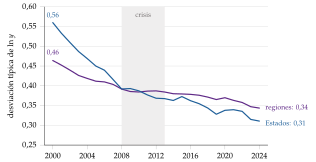
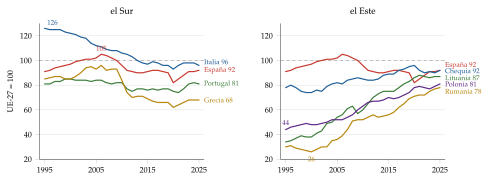
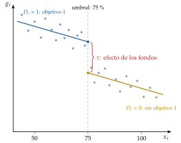

Tema 3.B.40
La Cohesión Económica y Social en la Unión Europea: política regional e instrumentos presupuestarios y financieros. Política social y de empleo. El proceso de convergencia real en la Unión Europea.
Política regional de la UE 2021-2027, fondos FEDER, FSE+ y de Cohesión, Pilar de Derechos Sociales, convergencia beta y sigma regional y efecto de los fondos.
Exclusivo Material exclusivo de victorgutierrezmarcos.es y la app Oposición TCEE · DCE. Puedes usarlo libremente para tu estudio personal. No se autoriza su incorporación a otras plataformas, aplicaciones o servicios. Condiciones de uso.
Introducción
Enganche:
«Dios da pan a quien no tiene dientes», dice el refrán. Es la crítica que más se oye a la política de cohesión: la Unión manda más dinero precisamente a las regiones que peor pueden aprovecharlo.
Los datos la apoyan solo a medias. Desde 2000, Polonia ha pasado del 48 % al 81 % de la renta media de la Unión por habitante y Rumanía, del 26 % al 78 %; en el mismo tiempo, España ha bajado del 97 % al 92 %, Italia del 122 % al 96 % y Grecia del 85 % al 68 %, después de recibir durante décadas los mayores fondos de cohesión.
La pregunta que recorre la exposición es: ¿sirve la política de cohesión para que las regiones pobres de la Unión alcancen a las ricas, o solo compensa a quien pierde con la integración?
Relevancia:
Es la mayor política de inversión de la Unión: unos 392.000 millones de euros en 2021-2027, casi 1/3 del marco financiero plurianual [ver tema 3.B.37]. En varios Estados del Este financia más de la mitad de la inversión pública.
Está en plena discusión: la Comisión propone que, desde 2028, la cohesión y la PAC se repartan en un solo plan nacional y regional por Estado, lo que las regiones y el Parlamento ven como una centralización.
Para España: ha sido el mayor beneficiario de los fondos estructurales hasta 2006 y recibe unos 36.700 millones en 2021-2027; aun así, su renta por habitante no ha convergido con la media desde 2008 [ver tema 4.A.17] [ver tema 4.A.30].
Contextualización:
Qué es: la cohesión económica, social y territorial es el objetivo de reducir las diferencias de desarrollo entre las regiones y el retraso de las menos favorecidas (art. 174 TFUE). Es una competencia compartida (art. 4 TFUE) y se persigue sobre todo con fondos.
Tiene 2 brazos:
la política regional, con el Fondo Europeo de Desarrollo Regional (FEDER), el Fondo de Cohesión y el Fondo de Transición Justa, que invierte en las regiones;
la política social y de empleo, con el Fondo Social Europeo Plus (FSE+), normas mínimas y coordinación de las políticas nacionales, que actúa sobre las personas.
Los 2 se distinguen por su base jurídica: la cohesión es competencia compartida y se hace con dinero; en lo social, la Unión solo fija mínimos en algunos ámbitos y en el empleo solo coordina (art. 5 TFUE). Por eso se estudian por separado.
La convergencia real es el acercamiento de las rentas por habitante (o de la productividad y el empleo) entre países y regiones; la nominal es la de precios, tipos y finanzas públicas que pide Maastricht [ver tema 3.B.43].
Problemática:
¿Por qué necesita una política regional un mercado único que, según la teoría neoclásica, ya debería acercar las rentas?
¿Con qué instrumentos actúa la Unión, y cómo se gestionan?
¿Qué puede hacer la Unión en lo social y en el empleo, si los Estados se reservan los salarios y la seguridad social?
¿Ha habido convergencia real en la Unión, y qué parte se debe a los fondos?
Estructura:
La exposición va de la política que más dinero mueve a la que más normas tiene, y termina con la prueba de los resultados:
I. Política regional (I): por qué existe, con el modelo de la integración y la localización, su marco jurídico, su historia, los instrumentos del periodo 2021-2027 y cómo se gestionan.
II. Políticas social y de empleo (II): sus bases, el Pilar Europeo de Derechos Sociales y sus instrumentos.
III. El proceso de convergencia real (III): el modelo de convergencia \(\beta\) y \(\sigma\) aplicado a las regiones de la Unión, la evidencia entre países y regiones, y el efecto de los fondos, con el modelo de regresión en discontinuidad.
3.B.40. La cohesión económica y social en la UE. Política social y de empleo. La convergencia real
Introducción2′30″
I. Política regional11′
1. Importancia y justificación
2. Marco jurídico
3. Antecedentes: evolución histórica
4. Instrumentos presupuestarios y financieros
5. Los fondos regionales: cómo se gestionan
II. Políticas social y de empleo7′
1. Política social
2. Política de empleo
III. El proceso de convergencia real en la Unión Europea8′30″
1. Caracterización teórica de la convergencia
2. Evidencia sobre la convergencia en la Unión Europea
3. Evidencia sobre el papel de la política regional
4. Dificultades de medición
Conclusión1′
Reparto del cante: introducción, 2′30″; I, 11′ (I.1, 4′, de ellos 2′30″ para el modelo de la integración y la localización; I.2, 1′; I.3, 1′30″; I.4, 3′; I.5, 1′30″); II, 7′ (II.1, 4′; II.2, 3′); III, 8′30″ (III.1, 2′30″; III.2, 2′; III.3, 3′, de ellos 2′ para el modelo de la regresión en discontinuidad; III.4, 1′), y conclusión, 1′. Los gráficos y figuras imprescindibles son el del mercado doméstico amplificado, la evolución de la política de cohesión, el de convergencia \(\beta\) entre regiones, el de España frente al Este y el Sur y el de la regresión en discontinuidad. Las cifras de las tablas, las cajas grises y los anexos son para las preguntas del tribunal.
Notación y siglas. En el modelo de la integración y la localización, \(N\) y \(S\) son las regiones (centro y periferia), \(s_n\) la cuota de empresas de \(N\), \(s_E\) su cuota del gasto, \(\tau>1\) el coste iceberg, \(\sigma>1\) la elasticidad de sustitución entre variedades y \(\phi=\tau^{1-\sigma}\in[0,1]\) la libertad comercial. En el de convergencia, \(y_t\) es la renta por habitante, \(\gamma^{y}_{t,t-1}\) su crecimiento, \(\beta_0\) y \(\beta_1\) coeficientes, \(\vec{z}_{t-1}\) los determinantes del estado estacionario, \(\lambda\) la velocidad de convergencia y \(\sigma_{y,t}^2\) la varianza del logaritmo de la renta. En el de la regresión en discontinuidad, \(x_i\) es la renta por habitante de la región \(i\) en % de la media, \(D_i\) el tratamiento (ser región del antiguo objetivo 1), \(g_i\) su crecimiento y \(\tau\) el efecto. FEDER: Fondo Europeo de Desarrollo Regional; FSE+: Fondo Social Europeo Plus; FTJ: Fondo de Transición Justa; RDC: Reglamento de disposiciones comunes; NUTS: nomenclatura de unidades territoriales estadísticas; PPA: paridad de poder adquisitivo; AROPE: población en riesgo de pobreza o exclusión social.
I. Política regional
Empezamos por la política regional, que es la que mueve casi todo el dinero de la cohesión.
Conclusión anticipada: la integración no reparte por igual sus ganancias. Al abaratar el comercio, puede concentrar la actividad en el centro, y la política regional nació como compensación política y como corrección de esa tendencia. Hoy es una política de inversión de 7 años, con 5 fondos y un reglamento común, gestionada con los Estados y las regiones, cada vez más ligada a otras prioridades (la competitividad, la defensa, la vivienda) y con un futuro en discusión.
I.1. Importancia y justificación
I.1.1. Importancia
En el presupuesto: la cohesión es, con la PAC, una de las 2 grandes políticas de gasto. Desde 1994 se lleva en torno a 1/3 del presupuesto de la Unión, unos 0,3-0,4 puntos del PIB de la Unión al año [ver tema 3.B.37].
En los receptores: para los Estados del Este, Portugal y Grecia, los fondos llegan a más del 2 % de su PIB al año en los años fuertes de ejecución y a buena parte de su inversión pública.
En el mapa: en 2024, 80 de las 232 regiones NUTS 2 de la Unión estaban por debajo del 75 % de la renta media por habitante, el umbral de las regiones menos desarrolladas.
I.1.2. Justificación política
Compensar a quien teme perder con la integración: cada gran paso de la integración ha venido con más cohesión, como pago lateral para lograr la unanimidad:
el FEDER (1975), tras la entrada del Reino Unido, Irlanda y Dinamarca, en parte para compensar al Reino Unido, que apenas recibía de la PAC;
la duplicación de los fondos del Paquete Delors I (1988), con el mercado único; el Informe Padoa-Schioppa (1987) advirtió de que el mercado único podía agrandar las diferencias regionales si no se acompañaba de medidas de cohesión;
el Fondo de Cohesión (1993), con el camino al euro, que España negoció en Maastricht y en el Consejo Europeo de Edimburgo (1992).
La legitimidad: los fondos hacen visible la Unión en cada región («cofinanciado por la Unión Europea») y ayudan a que los ciudadanos acepten la integración. Las regiones que se sienten olvidadas votan más a partidos contrarios a la Unión: es la «venganza de los lugares que no importan».
La solidaridad: la cohesión es uno de los objetivos de la Unión (art. 3 TUE), que se piensa como una comunidad y no solo como un mercado.
I.1.3. Justificación económica
La teoría neoclásica promete convergencia sin política: con rendimientos decrecientes, el capital va a donde es escaso y rinde más, y el comercio iguala los precios de los factores. Las regiones pobres crecerían más deprisa [ver tema 3.A.43].
Pero hay varias razones para que no ocurra, cada una con su remedio:
fallos de mercado: los mercados de capital imperfectos racionan el crédito a las regiones pobres; las infraestructuras y la formación son bienes públicos o tienen externalidades; puede haber fallos de coordinación, en los que ninguna empresa invierte si no invierten las demás (el gran impulso, big push) [ver tema 3.B.28];
rendimientos crecientes y crecimiento endógeno: si la tecnología y el capital humano se refuerzan a sí mismos y sus efectos desbordamiento son locales, las regiones ricas pueden crecer más [ver tema 3.A.44];
la causación circular acumulativa de Gunnar Myrdal (1957): el mercado tiende a concentrar la inversión donde ya hay actividad, y los «efectos de expulsión» sobre las regiones atrasadas pesan más que los de «difusión»1;
la unión monetaria: si las estructuras económicas son muy distintas, las perturbaciones son asimétricas y la política monetaria común no sirve a todos; acercar las estructuras y tener transferencias entre regiones ayuda a que funcione la zona del euro [ver tema 3.B.16].
La razón más propia de la Unión es la que da la nueva geografía económica: el mercado único abarata el comercio, y abaratar el comercio cambia dónde se produce. Es lo que cuenta el modelo siguiente.
I.1.4. Integración, localización y el dilema de la cohesión
a) Idea
La riqueza, la población y el empleo están muy concentrados en el espacio: el «pentágono» entre Londres, París, Milán, Múnich y Hamburgo, o las capitales del Este. Esa concentración tiene determinantes de primera naturaleza (recursos, clima, puertos) y de segunda naturaleza, que son económicos: las empresas quieren estar cerca de sus clientes y de sus proveedores.
La nueva geografía económica de Krugman (1991)2 explica cómo una pequeña asimetría puede convertirse en una gran diferencia entre regiones [ver tema 3.B.6] [ver tema 3.B.10]. Aquí usamos su versión más sencilla, el modelo de capital móvil (footloose capital) de Martin y Rogers (1995), porque da una fórmula cerrada y sirve para comparar políticas regionales.
b) Modelo
i) Supuestos
2 regiones, el centro \(N\) y la periferia \(S\), con la misma tecnología. El centro es algo más grande: su cuota del gasto total es \(s_E>1/2\).
Un sector agrícola con rendimientos constantes y comercio libre, que fija el salario, y un sector manufacturero con variedades diferenciadas de Dixit y Stiglitz, con elasticidad de sustitución \(\sigma>1\) [ver tema 3.A.18].
Cada empresa manufacturera necesita una unidad de capital (su coste fijo). El capital se mueve a la región donde rinde más, pero sus dueños no: gastan sus rentas donde viven. Por eso \(s_E\) no cambia cuando se mueven las empresas.
Vender en la otra región cuesta \(\tau>1\): de cada \(\tau\) unidades enviadas llega una (coste iceberg). La libertad comercial es \(\phi=\tau^{1-\sigma}\), que va de 0 (autarquía) a 1 (comercio libre). La integración sube \(\phi\).
ii) Desarrollo
Paso 1: el beneficio en cada región.
Una empresa en \(N\) vende en su mercado, el \(s_E\) del gasto, y en el otro con el coste de \(\tau\). Su beneficio es proporcional a \(\frac{s_E}{\Delta_N}+\phi\frac{1-s_E}{\Delta_S}\), donde \(\Delta_N=s_n+\phi(1-s_n)\) y \(\Delta_S=\phi s_n+(1-s_n)\) miden la competencia que encuentra en cada mercado y \(s_n\) es la cuota de empresas del centro.
Más gasto local atrae empresas; más empresas locales, por la competencia, las repelen.
Paso 2: el equilibrio de localización. El capital se mueve hasta que el beneficio es igual en las 2 regiones. Igualando y despejando:
\[s_n=\frac12+\frac{1+\phi}{1-\phi}\left(s_E-\frac12\right)\tag{1}\]
Paso 3: el efecto del mercado doméstico amplificado.
Como \(\frac{1+\phi}{1-\phi}>1\), la cuota de empresas del centro es mayor que su cuota del gasto: el mercado grande atrae más que proporcionalmente a la industria.
El factor crece con \(\phi\): cuanto más integrado está el mercado, más fácil es servir a la periferia desde el centro.
Con \(s_n=1\) se llega a la aglomeración total, en \(\phi^{\mathrm{CP}}=\frac{1-s_E}{s_E}\). Con \(s_E=0{,}6\), en \(\phi=2/3\) (gráfico 1).

iii) Implicaciones
La integración no es neutral en el espacio: al subir \(\phi\), el mercado único lleva industria del Sur y del Este al centro, aunque eleve la renta del conjunto. Es la razón económica de la cohesión como compensación.
Las transferencias de renta a la periferia frenan la concentración: si los fondos suben el gasto de \(S\) (bajan \(s_E\) a \(s_E'\)), la curva baja y la aglomeración total exige más integración (\(\phi^{\mathrm{CP}\prime}>\phi^{\mathrm{CP}}\)).
No toda infraestructura ayuda a la periferia :
la que une la periferia con el centro (una autovía o un tren rápido entre ambas) sube \(\phi\) y puede vaciar la periferia, porque deja servirla desde el centro: es la «carretera de doble sentido»;
la que abarata el comercio dentro de la periferia agranda su mercado efectivo y atrae empresas.
El dilema de la cohesión: Martin (1999) añade crecimiento endógeno con efectos desbordamiento locales. Concentrar la innovación en el centro hace crecer más a toda la Unión, pero agranda la desigualdad entre regiones. Hay que elegir entre crecimiento y equidad espacial, salvo con políticas que abaraten la innovación y difundan el conocimiento, que mejoran las 2 cosas.
c) Extensiones
Causación circular: en el modelo centro-periferia de Krugman (1991), los trabajadores también se mueven y llevan su gasto, de modo que \(s_E\) se vuelve endógena: aparecen puntos de ruptura, aglomeración total e histéresis (el diagrama tomahawk) [ver tema 3.B.6].
La U de Krugman y Venables (1995): con vínculos entre industrias y salarios que reaccionan, la desigualdad entre centro y periferia primero sube y luego baja al integrarse. Con comercio muy barato, los salarios bajos de la periferia la vuelven a hacer atractiva: es lo que ha pasado con las fábricas que se han ido al Este.
Los efectos desbordamiento del conocimiento: Baldwin y Forslid (2000) muestran que abaratar el comercio de bienes favorece la aglomeración, y abaratar el de ideas, la dispersión.
d) Evidencia empírica
Puga (2002) resume la de las primeras décadas: pese a los fondos, las diferencias entre países se redujeron, y las diferencias entre regiones de un mismo país crecieron, con más especialización y un paro más polarizado.
Con los datos de 2000-2024, la dispersión entre Estados sigue bajando y la dispersión entre regiones baja mucho menos desde 2008 (gráfico 5): las capitales del Este, como Varsovia (del 105 % al 157 % de la media) o Bucarest, despegan mientras sus regiones rurales se quedan atrás.
Las regiones de renta media que se estancan, con poca industria y poco capital humano, concentran el voto contrario a la Unión.
e) Valoración
El modelo da la razón económica de que la cohesión acompañe al mercado único y al euro: la integración tiende a concentrar, y las transferencias pueden contrarrestarlo.
Advierte además contra la política regional «de carreteras»: unir mejor la periferia con el centro puede perjudicarla. Las prioridades actuales (innovación, capital humano, especialización inteligente) siguen esa lección.
Pero es un modelo de 2 regiones, sin congestión ni costes de vivienda en el centro, y no dice qué política funciona mejor en cada caso: eso es empírico (III.3). Veamos antes qué base jurídica tiene la Unión para actuar.
I.2. Marco jurídico
La competencia: la cohesión económica, social y territorial es una competencia compartida (art. 4.2.c TFUE): la Unión y los Estados pueden legislar, y los Estados lo hacen en la medida en que la Unión no lo haya hecho. Es distinta de las competencias exclusivas (art. 3: unión aduanera, competencia, política monetaria del euro, pesca y política comercial), de la coordinación de las políticas económicas y de empleo (art. 5) y de las de apoyo (art. 6: industria, educación, turismo, salud) [ver tema 3.B.36].
Las bases (título XVIII del TFUE, arts. 174-178):
art. 174: la Unión promueve un desarrollo armonioso y reduce las diferencias entre regiones y el retraso de las menos favorecidas, con especial atención a las zonas rurales, a las afectadas por una transición industrial y a las que tienen desventajas naturales o demográficas graves y permanentes (las islas, las de montaña, las muy poco pobladas y las transfronterizas). La dimensión territorial se añadió con Lisboa (2009);
art. 175: los Estados coordinan sus políticas económicas para alcanzar estos objetivos, y la Unión los apoya con los fondos estructurales, el BEI y los demás instrumentos; la Comisión informa cada 3 años (el informe de cohesión);
art. 176: el FEDER corrige los principales desequilibrios regionales, con el desarrollo y el ajuste de las regiones atrasadas y la reconversión de las industriales en declive;
art. 177: los reglamentos de los fondos fijan sus objetivos, su organización y las normas comunes; el Fondo de Cohesión financia medio ambiente y redes transeuropeas de transporte;
art. 178: los reglamentos de aplicación del FEDER.
Cómo se decide: por el procedimiento legislativo ordinario, previa consulta al Comité Económico y Social Europeo (empresarios, sindicatos y otros grupos) y al Comité de las Regiones (cargos electos locales y regionales, creado en Maastricht y en funcionamiento desde 1994). El dinero de cada periodo, en cambio, lo fija el marco financiero plurianual, por unanimidad.
I.3. Antecedentes: evolución histórica
La política regional ha crecido a saltos, con cada ampliación y cada paso de la integración (figura 1):
1957-1974: sin política regional. El Tratado de Roma habla de un desarrollo armonioso y crea el Fondo Social Europeo, pero 6 Estados sin grandes diferencias (salvo el sur de Italia) no la necesitaban; el BEI financiaba proyectos en las regiones atrasadas.
1975-1988: el FEDER por cuotas. Tras la ampliación de 1973, el FEDER (1975) reparte dinero por cuotas nacionales para proyectos que eligen los Estados: es más una transferencia entre Estados que una política europea.
1988-1999: la política de cohesión de verdad. Con las entradas de Grecia (1981), España y Portugal (1986), cuya renta por habitante estaba entre el 50 % y el 75 % de la media, el Acta Única (1986) hace de la cohesión un objetivo del Tratado. La reforma de 1988 (Paquete Delors I) duplica los fondos y fija sus 4 principios: concentración en las regiones más pobres (el objetivo 1, por debajo del 75 %), programación plurianual, asociación con las regiones y los agentes sociales y adicionalidad (los fondos se suman a la inversión nacional, no la sustituyen). En 1993 nace el Fondo de Cohesión, para los Estados que preparan el euro con menos renta.
2000-2013: la ampliación al Este. La Agenda 2000 prepara la entrada de 10 Estados en 2004 (y 2 en 2007), con un 20 % más de población y solo un 5 % más de PIB. Los fondos se orientan a la Estrategia de Lisboa (innovación) y la cohesión llega a superar a la PAC en el presupuesto.
2014-2020: resultados y condiciones. Concentración temática en 11 objetivos, condiciones ex ante y macroeconómicas, ligadas al Semestre Europeo [ver tema 3.B.45].
Desde 2020: más funciones con menos peso relativo. La cohesión responde a la pandemia (REACT-EU), a la transición climática (Fondo de Transición Justa) y, en la revisión intermedia de 2025, a la defensa y la vivienda.

Fuente: elaboración propia a partir de la Comisión Europea y de la propuesta de marco financiero 2028-2034. Dotación en miles de millones de euros corrientes de los fondos estructurales y de cohesión; 2000-2006, con los 21.700 millones para los nuevos Estados.
España en esta historia: fue el mayor beneficiario de los fondos de 1989 a 2006 (14.200, 42.400 y 56.300 millones en los 3 periodos), con autovías, regadíos, depuradoras y formación; desde 2007, Polonia ocupa ese lugar.
I.4. Instrumentos presupuestarios y financieros
I.4.1. El marco del periodo 2021-2027
Un reglamento para todos: el Reglamento de disposiciones comunes (RDC, Reglamento 2021/1060) fija las reglas de 8 fondos de gestión compartida (los 4 de la cohesión, más el de pesca y 3 de interior), y cada fondo tiene además el suyo (FEDER y Fondo de Cohesión, 2021/1058; FSE+, 2021/1057; FTJ, 2021/1056; Interreg, 2021/1059) (figura 2).
5 objetivos políticos (art. 5 RDC), que sustituyen a los 11 objetivos temáticos de 2014-2020: una Europa más competitiva e inteligente, más verde y baja en carbono, más conectada, más social e inclusiva y más próxima a los ciudadanos; el FTJ tiene un objetivo propio, ayudar a las regiones y personas más afectadas por la transición hacia la neutralidad climática.
Los fondos (importes de la Unión en euros corrientes):
el FEDER (unos 214.000 millones, más 9.400 de Interreg): innovación, pymes, digitalización, energía, medio ambiente, transporte y desarrollo urbano; al menos el 8 % para el desarrollo urbano sostenible;
el Fondo de Cohesión (unos 39.000 millones, más 11.300 transferidos al Mecanismo «Conectar Europa»): medio ambiente y redes transeuropeas de transporte en los 15 Estados con renta nacional bruta por habitante inferior al 90 % de la media (España no lo recibe desde 2014);
el FSE+ (unos 95.000 millones): empleo, educación e inclusión (II.1);
el Fondo de Transición Justa (FTJ; unos 22.000 millones iniciales, 19.700 hoy), nacido con el Pacto Verde para las regiones del carbón y la industria intensiva en emisiones, con dinero del marco y del NextGenerationEU;
la cooperación territorial europea (Interreg): programas transfronterizos, transnacionales e interregionales.
Las 3 categorías de regiones (art. 108 RDC), según el PIB por habitante en PPA de 2015-2017 frente a la media de la UE-27, con su cofinanciación máxima de la Unión (art. 112):
menos desarrolladas (menos del 75 %): hasta el 85 % del gasto. En España, Andalucía, Castilla-La Mancha, Extremadura, Ceuta y Melilla;
en transición (75-100 %; la categoría pasó del 90 % al 100 % en 2021): hasta el 60 % (70 % si antes eran menos desarrolladas). En España, 9: Galicia, Asturias, Cantabria, La Rioja, Castilla y León, la Comunidad Valenciana, Baleares, Murcia y Canarias;
más desarrolladas (más del 100 %): hasta el 40 % (50 % si antes estaban por debajo). En España, el País Vasco, Navarra, Aragón, Madrid y Cataluña.
El reparto entre Estados sigue el método de Berlín: la dotación de cada región depende de su población y de su distancia a la renta media, con primas por paro, paro juvenil, bajo nivel educativo, emisiones y migración. El 61 % del dinero va a las regiones menos desarrolladas.
Las reglas de calidad del gasto:
concentración temática: los Estados más ricos deben dedicar al menos el 85 % de su FEDER a los objetivos 1 y 2; los intermedios, el 40 % al 1; los más pobres, el 25 % al 1; todos, al menos el 30 % al 2 (Reglamento 2021/1058, art. 4); en el FSE+, las reservas de II.1;
el clima: el 30 % del FEDER y el 37 % del Fondo de Cohesión;
condiciones favorecedoras (art. 15 RDC): 4 horizontales (contratación pública, ayudas de Estado, Carta de los Derechos Fundamentales, discapacidad) y 16 temáticas (una estrategia de especialización inteligente, planes de residuos, de transporte…); si no se cumplen, ese gasto no se reembolsa;
liberación automática de compromisos: lo que no se gasta en 3 años (\(n+3\)) se pierde.

Fuente: elaboración propia a partir del RDC y de la Comisión Europea (importes de la Unión en la primera adopción de los programas).
Quién recibe: Polonia es, de lejos, el primer receptor; por habitante, los bálticos, Eslovaquia, Croacia y Hungría (gráfico 2). España es el tercero en importe, con 35.600 millones en los programas vigentes, unos 724 euros por habitante.
El Acuerdo de Asociación de España (aprobado en noviembre de 2022): unos 36.700 millones de euros de la Unión, con 23.400 del FEDER, 11.300 del FSE+, 870 del FTJ y 1.120 del fondo de pesca; casi la mitad del FEDER va a las regiones menos desarrolladas [ver tema 4.A.17] [ver tema 4.A.30].

Fuente: elaboración propia a partir de la Comisión Europea (FEDER, Fondo de Cohesión, FSE+ y FTJ, sin Interreg; versión vigente de los programas, noviembre de 2026) y de Eurostat (población a 1 de enero de 2025).
I.4.2. La revisión intermedia de 2025 y la STEP
La Plataforma de Tecnologías Estratégicas para Europa (STEP, Reglamento 2024/795) permitió en 2024 reorientar fondos de cohesión hacia tecnologías digitales, limpias y biotecnológicas, con cofinanciación de hasta el 100 % [ver tema 3.B.37]. Hay unos 15.200 millones de la cohesión en prioridades STEP.
La revisión intermedia (propuesta de abril de 2025; Reglamentos 2025/1913 y 2025/1914, de septiembre de 2025) abrió los programas a nuevas prioridades:
la competitividad y la descarbonización, la defensa y la industria de doble uso (incluida la movilidad militar), la vivienda asequible, la resiliencia hídrica, la transición energética y las regiones de la frontera oriental;
con incentivos: una prefinanciación extra del 4,5 % (9,5 % en la frontera con Rusia, Bielorrusia y Ucrania) si se reasigna al menos el 10 % del programa, 10 puntos más de cofinanciación y un año más para gastar, hasta 2030.
El resultado: 25 Estados reasignaron 34.600 millones (casi el 10 % de la cohesión) en 186 programas: 15.200 a la competitividad, 11.900 a la defensa, 3.300 a la vivienda, 3.100 al agua y 1.200 a la energía. España reasignó 3.200 millones, 2/3 a la competitividad.
El debate: la cohesión se ha vuelto la «caja» de la que salen las nuevas prioridades de la Unión. Para unos es flexibilidad; para otros, alejarla de su objetivo, la convergencia de las regiones atrasadas.
I.4.3. Otros instrumentos
Fondos de otras políticas con fines parecidos: el FEADER, segundo pilar de la PAC, financia el desarrollo rural [ver tema 3.B.38]; el fondo de pesca (FEMPA), las zonas costeras; el NextGenerationEU y su Mecanismo de Recuperación y Resiliencia, desde 2021, han sido en varios Estados mayores que la propia cohesión [ver tema 3.B.37].
El Fondo de Solidaridad de la Unión Europea (2002, tras las inundaciones de Europa central): ayudas tras catástrofes naturales y, desde 2020, emergencias de salud pública. Se financia con la Reserva Europea de Solidaridad, fuera de los techos del marco (hasta 1.016 millones de euros de 2018 al año desde la revisión de 2024).
El Instrumento de Ayuda Preadhesión (IPA III) prepara a los candidatos, también en desarrollo regional [ver tema 3.B.42].
Instrumentos financieros: parte de los fondos se da como préstamos, garantías o capital, que se devuelven y se reutilizan, para las inversiones que generan ingresos (las pymes, la eficiencia energética). Crecieron de 1.000 millones en 2000-2006 a 11.500 en 2007-2013.
El Banco Europeo de Inversiones (BEI) presta para proyectos de interés de la Unión, cofinancia con los fondos y asesora a las regiones. En 2025, el grupo BEI dedicó 42.800 millones, el 48 % de su financiación en la Unión, a regiones de cohesión [ver tema 3.B.30].
InvestEU (Reglamento 2021/523): una garantía del presupuesto de 26.200 millones de euros, gestionada sobre todo por el BEI, para movilizar más de 372.000 millones de inversión. Los Estados pueden aportar a ella parte de sus fondos de cohesión.
I.5. Los fondos regionales: cómo se gestionan
En gestión compartida: la Comisión aprueba las estrategias y paga; los Estados y las regiones seleccionan los proyectos, pagan a los beneficiarios y controlan [ver tema 3.B.37]. El ciclo:
cada Estado negocia con la Comisión un acuerdo de asociación, su estrategia para los 7 años, que debe tener en cuenta las recomendaciones del Semestre Europeo;
los programas (nacionales o regionales, por fondo) concretan prioridades, objetivos e indicadores; los aprueba la Comisión;
cada programa tiene una autoridad de gestión, una de auditoría y un comité de seguimiento con los agentes sociales y la sociedad civil (el principio de asociación y la gobernanza multinivel);
la Comisión reembolsa los gastos certificados y vigila; en 2025 se revisan los programas (la revisión intermedia).
Las condicionalidades:
macroeconómica (art. 19 RDC): el Consejo puede suspender compromisos o pagos a un Estado que no corrija su déficit excesivo o sus desequilibrios [ver tema 3.B.45];
del Estado de Derecho (Reglamento 2020/2092) y de la Carta de los Derechos Fundamentales: con ellas se suspendieron fondos a Hungría desde 2022 [ver tema 3.B.37].
La ejecución: el gran problema de la cohesión es gastar a tiempo. Los programas de 2021-2027 empezaron tarde, porque coincidieron con el MRR, que tenía prioridad por su plazo de 2026:
en noviembre de 2026, la Unión había pagado el 30 % de lo programado, y solo el 21 % sin contar los anticipos; España, el 20 % y el 12 %, entre los más bajos;
los programas de 2014-2020 terminaron pagando el 99,6 % de lo previsto, pero con años de retraso y concentrando el gasto al final.
El futuro: la propuesta para 2028-2034 (julio de 2025):
un solo Fondo europeo con la cohesión, la PAC, la pesca, la migración y la seguridad, de 865.000 millones de euros corrientes, repartido en planes de asociación nacionales y regionales: 27 planes y uno de Interreg en vez de unos 540 programas;
al menos 218.000 millones reservados a las regiones menos desarrolladas, con mínimos por Estado, y un mínimo para la PAC;
pagos ligados a hitos y reformas, como en el MRR, y no a costes certificados;
el debate: las regiones (Comité de las Regiones), el Parlamento y los «Amigos de la Cohesión» (con España) temen que el plan nacional deje fuera a las regiones y diluya la cohesión entre otras prioridades; la Comisión defiende la simplificación y el vínculo con las reformas. A noviembre de 2026 el Parlamento aún no ha votado su informe y la negociación del marco sigue abierta [ver tema 3.B.37].
Recapitulación: la política regional se justifica por la tendencia de la integración a concentrar la actividad y se ejecuta con unos 392.000 millones en 2021-2027, en gestión compartida, con reglas de concentración y condiciones. Se ha usado cada vez más para otras prioridades, y su forma después de 2027 está en juego. Pasamos ahora a la otra mitad de la cohesión: las personas.
III. El proceso de convergencia real en la Unión Europea
Vistas las políticas, queda la prueba de los resultados. Responderemos a 2 preguntas: ¿se han acercado las rentas de los países y las regiones de la Unión?, y ¿qué parte se debe a los fondos? Nos centramos en la renta por habitante en PPA, aunque la convergencia también se mide en productividad, empleo o paro.
Conclusión anticipada: ha habido convergencia, rápida, entre países y entre regiones, pero casi toda la explica el Este; el Sur, España incluida, se ha alejado desde 2008, y muchas regiones de renta media están estancadas. Los fondos ayudan a crecer, en torno al umbral del 75 %, pero su efecto depende de la capacidad de cada región para aprovecharlos.
III.1. Caracterización teórica de la convergencia
a) Idea
La teoría del crecimiento predice que una economía crece más deprisa cuanto más lejos está de su estado estacionario, porque el capital rinde más donde es escaso. Si las regiones de la Unión comparten tecnología, instituciones y mercado, sus estados estacionarios se parecerán y las pobres deberían alcanzar a las ricas [ver tema 3.A.43].3
Para comprobarlo se usan las nociones de convergencia \(\beta\) y \(\sigma\), de Xavier Sala-i-Martín (tesis de 1990) y Barro y Sala-i-Martin (1991), que aquí resumimos y aplicamos a las regiones de la Unión [ver tema 3.A.45].
b) Modelo
i) Supuestos
Cada región \(i\) se comporta como una economía de Solow: rendimientos decrecientes del capital y progreso técnico exógeno común.
Su crecimiento depende de la distancia a su estado estacionario, que depende de unos determinantes \(\vec{z}\) (tasa de inversión, crecimiento de la población, capital humano).
Las perturbaciones regionales son transitorias.
ii) Desarrollo
Paso 1: la convergencia \(\beta\). Hay convergencia \(\beta\) si las regiones con menos renta por habitante crecen más que las de más renta. Se contrasta con una regresión entre regiones del crecimiento sobre la renta inicial:
\[\gamma^{y}_{t,t-1}=\beta_0+\beta_1\ln y_{t-1}+\vec{\eta}\cdot\vec{z}_{t-1}+u_t\tag{2}\]
es absoluta si \(\beta_1<0\) sin controles (\(\vec{\eta}=\vec{0}\)), y condicional si \(\beta_1<0\) al controlar por \(\vec{z}_{t-1}\);
la velocidad de convergencia \(\lambda\) es la fracción de la distancia al estado estacionario que se cierra cada año: con un periodo de \(T\) años, \(\beta_1=-(1-e^{-\lambda T})/T\). En el modelo de Solow, \(\lambda=(1-\alpha)(n+g+\delta)\).
Paso 2: la convergencia \(\sigma\). Hay convergencia \(\sigma\) si la dispersión de las rentas por habitante (la varianza de su logaritmo) se reduce con el tiempo: \[\sigma^{2}_{y,t-1}>\sigma^{2}_{y,t}.\tag{3}\]
Paso 3: la relación entre las 2. La \(\beta\) es necesaria pero no suficiente para la \(\sigma\): una región pobre puede crecer tanto que adelante a la rica y deje más distancia que al principio, y las perturbaciones nuevas pueden volver a separar a las regiones aunque las pobres crezcan más. Los 3 casos con 2 economías se dibujan aparte [ver tema 3.A.45].
iii) Implicaciones
Si hay convergencia absoluta, el mercado único bastaría y la política regional solo la aceleraría.
Si solo hay convergencia condicional, cada región va a su propio estado estacionario, y una región con poco capital humano o malas instituciones se queda atrás para siempre: la política debe cambiar los determinantes \(\vec{z}\), no solo dar renta.
Con \(\lambda\simeq2\) %, la mitad de la distancia tarda unos 35 años en cerrarse: la convergencia es cosa de generaciones.
c) Extensiones
Clubes de convergencia: las regiones pueden converger entre grupos distintos, no hacia una media común. Quah (1996) encuentra en Europa una distribución con 2 picos, y que lo que pesa es el país y los vecinos, no la Unión en su conjunto.
La trampa del desarrollo regional: Diemer et al. (2022) llaman así a las regiones que crecen menos que la Unión, su país y su propio pasado. La Comisión identifica en esa situación al 28 % de la población de la Unión (2021), sobre todo en regiones de renta media y alta, y añade una trampa del talento: 46 regiones con más de 70 millones de habitantes pierden población joven y cualificada.
d) Evidencia empírica
La clásica: Barro y Sala-i-Martin (1991) y Sala-i-Martin (1996) encuentran entre regiones europeas una velocidad del 2 % anual, igual que entre los estados de Estados Unidos y las prefecturas de Japón.
Una estimación propia con los datos de hoy: con las 232 regiones NUTS 2 de la Unión y su PIB por habitante en PPA relativo a la media, entre 2000 y 2024 (gráfico 4):
hay convergencia \(\beta\) absoluta y fuerte: \(\hat\beta_1=-1{,}99\) (error típico 0,12), con un \(R^2\) de 0,55. Una región con la mitad de renta que otra crece 1,4 puntos más al año (\(1{,}99\times\ln2\)), y la velocidad implícita es \(\lambda\simeq2{,}7\) % anual, algo mayor que la clásica;
pero la explican las regiones del Este, que parten de muy abajo y crecen 2-4 puntos más que la media. Entre las regiones del resto de la Unión la pendiente es nula (\(+0{,}02\), con un \(R^2\) de 0): las pobres del Sur no crecen más que las ricas del Norte, y muchas crecen menos;
las regiones españolas están casi todas por debajo de cero: Canarias pasó del 91 % de la media en 2000 al 72 % en 2024, la Comunidad Valenciana del 93 % al 77 % y Andalucía del 72 % al 69 %; solo Extremadura y Galicia mejoran algo.
La convergencia \(\sigma\): la dispersión baja entre Estados (de 0,56 en 2000 a 0,31 en 2024) y entre regiones (de 0,46 a 0,34), pero entre regiones se para de 2008 a 2016 (gráfico 5).

Fuente: elaboración propia a partir de Eurostat (PIB por habitante en PPA de las regiones NUTS 2, UE-27 = 100). Regresión por mínimos cuadrados de \(\frac{100}{24}\ln(y_{2024}/y_{2000})\) sobre \(\ln y_{2000}\); línea discontinua, la misma regresión solo con las regiones del resto de la Unión. Regiones del Este: Estados que entraron entre 2004 y 2013, salvo Chipre y Malta.

Fuente: elaboración propia a partir de Eurostat (desviación típica del logaritmo del PIB por habitante en PPA; 224 regiones NUTS 2 con datos todos los años y 27 Estados, sin ponderar).
e) Valoración
El modelo da una forma sencilla y comparable de medir la convergencia, y los datos de la Unión lo confirman a medias: convergen las regiones que estaban muy lejos, y se estancan las de renta media.
Tiene límites conocidos: la regresión a la media de Galton (una \(\beta\) negativa puede salir solo de perturbaciones transitorias), el sesgo de las variables omitidas y que el PPA sirve para comparar niveles en un año, no tanto para medir crecimientos. Por eso conviene mirar también la evidencia descriptiva y, para los fondos, métodos que identifiquen la causa.
III.2. Evidencia sobre la convergencia en la Unión Europea
Hasta 2008, convergencia: la ampliación al Este coincide con un crecimiento muy rápido de los nuevos Estados. En las regiones, la renta media del 20 % más rico era unas 3,5 veces la del 20 % más pobre en 2000, y 2,8 veces en 2008.
2008-2013, la crisis la frena: las diferencias de paro se disparan (en 2013, 27 regiones tenían más del 20 % de paro, frente a 5 en 2008) y el Sur retrocede.
Desde 2014, convergencia a 2 velocidades (gráfico 6):
el Este sigue acercándose: los nuevos Estados pasan del 45 % de la media en 1995 a cerca del 80 % hoy. Chequia ya iguala a España (92 %), Polonia (81 %) ha alcanzado a Portugal y Lituania la supera;
el Sur se aleja: Italia baja del 122 % al 96 % desde 2000, Grecia está en el 68 % y Portugal no se mueve del 81 %. Un tercio de las regiones de la Unión no había recuperado en 2023 su renta por habitante de 2008, y entre ellas están toda Grecia, el 80 % de Italia y un tercio de España.
España: del 91 % de la media en 1995 al 105 % en 2006, con el auge del crédito y la construcción; cae al 90 % tras la crisis, al 82 % en 2020, y vuelve al 92 % en 2025. Su convergencia anterior a 2008 no era sostenible: venía del empleo en sectores de baja productividad, no de la productividad, que apenas creció [ver tema 4.A.28] [ver tema 4.A.17].
El patrón: convergencia entre países y, dentro de cada país, divergencia a favor de las capitales y las regiones con servicios avanzados; el Este converge por la integración en las cadenas de valor alemanas y la inversión extranjera, y el Sur sufre la competencia de Asia en manufacturas, la crisis del euro y la baja productividad.

Fuente: elaboración propia a partir de Eurostat.
III.3. Evidencia sobre el papel de la política regional
La convergencia del Este coincide con los fondos, pero también con la entrada en el mercado único y la llegada de capital extranjero. ¿Cuánto se debe a los fondos? Hay 2 maneras de responder: los modelos macroeconómicos, que simulan la economía con y sin fondos, y la evaluación de impacto, que compara regiones parecidas que los reciben y que no.
III.3.1. El efecto de los fondos: la regresión en discontinuidad
a) Idea
Comparar el crecimiento de las regiones con y sin fondos no sirve: las que los reciben son, por definición, más pobres, y crecerían distinto de todos modos (el sesgo de selección).
Pero la regla de reparto da un experimento natural: una región con el 74 % de la renta media recibe muchos más fondos que una con el 76 %, y por lo demás son casi iguales. Becker, Egger y Ehrlich (2010) usan ese salto en el umbral del 75 % para medir el efecto de los fondos del antiguo objetivo 1 con una regresión en discontinuidad (regression discontinuity design).
b) Modelo
i) Supuestos
La variable de asignación \(x_i\) es la renta por habitante de la región en % de la media en los años de referencia, y el tratamiento es \(D_i=\mathbb{1}[x_i<75]\).
Las regiones no pueden manipular \(x_i\) para quedar justo por debajo del umbral.
Sin fondos, el crecimiento \(g_i\) variaría de forma continua con \(x_i\): todo lo demás que influye en el crecimiento no salta en el 75 %.
ii) Desarrollo
Paso 1: se estima el crecimiento posterior en función de la distancia al umbral, a los 2 lados, con un salto en el umbral:
\[g_i=\alpha+\tau D_i+f(x_i-75)+\varepsilon_i\tag{4}\]
donde \(f(\cdot)\) es una función flexible (un polinomio, que puede ser distinto a cada lado).
Paso 2: \(\tau\) es el salto del crecimiento en el umbral (gráfico 7): como las regiones a un lado y al otro son comparables, es el efecto causal de los fondos en las regiones cercanas al 75 %.
Paso 3: como no todas las regiones por debajo reciben el tratamiento ni todas las de encima se quedan sin él (régimen transitorio, excepciones), se usa una versión borrosa (fuzzy), que divide el salto del crecimiento por el salto de la probabilidad de tratamiento.

Fuente: elaboración propia a partir de Becker, Egger y Ehrlich (2010). Ilustrativo: los puntos no son datos. \(x_i\): PIB por habitante en PPA de la región en % de la media de la Unión; \(g_i\): crecimiento posterior.
iii) Implicaciones
Becker, Egger y Ehrlich (2010) encuentran que las regiones del objetivo 1 crecen más en PIB por habitante (en torno a 1,6 puntos más de crecimiento anual medio durante el periodo de programación), pero no en empleo; con un cálculo sencillo de costes y beneficios, concluyen que los fondos no solo son eficaces, sino también eficientes.
Es decir, el pan sirve: los fondos sí suben la renta de las regiones que los reciben.
c) Extensiones
La capacidad de absorción: Becker, Egger y Ehrlich (2013) muestran que solo en torno al 30 % de las regiones convierte los fondos en más crecimiento: las que tienen suficiente capital humano y buenas instituciones. Es el refrán del principio: el pan solo alimenta a quien tiene dientes.
La persistencia: Becker, Egger y Ehrlich (2018) encuentran que el efecto se deshace en buena parte cuando la región pierde la condición de objetivo 1, y que fue más débil durante la crisis.
Otras estimaciones: Pellegrini et al. (2013) confirman con el mismo método un efecto positivo en el crecimiento en 1994-2006.
d) Evidencia empírica
Los modelos macroeconómicos de la Comisión (QUEST, RHOMOLO; antes HERMIN y EcoMod) estiman que cada euro invertido en 2014-2027 genera 1,3 euros de PIB en 2030 y casi el triple a largo plazo, con efectos mayores en los grandes receptores. En 2000-2006, HERMIN estimaba que el PIB de los nuevos Estados habría sido entre un 5 % y un 10 % menor sin la cohesión, la mitad por efectos de demanda y la otra mitad por oferta.
En España: Fuente y Vives (1995) encuentran que el FEDER, repartido con criterio redistributivo, tuvo un efecto significativo aunque limitado en la convergencia regional, mientras que la inversión pública nacional en infraestructuras apenas contribuyó; trabajos posteriores atribuyen a los fondos en torno a 1/5 o 1/3 de la convergencia de las regiones españolas en los 90 [ver tema 4.A.17].
Los escépticos: Boldrin y Canova (2001) no encuentran que los fondos reduzcan las disparidades y los ven como una política sobre todo redistributiva, ligada a la negociación política.
e) Valoración
La regresión en discontinuidad es la evidencia más creíble: compara regiones casi iguales y no depende de un modelo de toda la economía.
Pero mide un efecto local, el de las regiones en torno al 75 %, que no tiene por qué valer para las muy pobres ni para las de transición; y mide el crecimiento en los años de los fondos, no si la región se ha transformado.
Junto con la capacidad de absorción, apunta a lo que falla en el Sur: el dinero llega, pero sin capital humano, sin instituciones que seleccionen bien los proyectos y sin estrategias de especialización, se queda en gasto.
III.4. Dificultades de medición
Muchos factores a la vez: la convergencia depende del mercado único, del euro, de la inversión extranjera, de las políticas nacionales y del ciclo; separar el efecto de los fondos es difícil (variables omitidas).
El contrafactual: hay que saber qué habría pasado sin los fondos y qué coste de oportunidad tienen:
expulsión (crowding out): los fondos pueden sustituir a la inversión nacional que se habría hecho igual (por eso existe la adicionalidad) o a la privada, y se financian con impuestos que distorsionan;
atracción (crowding in): si el proyecto complementa al capital privado (una carretera, una red de banda ancha), sube su rentabilidad y atrae más inversión.
Los efectos fuera de la región: parte del gasto vuelve a los contribuyentes netos, en importaciones y en contratos para sus empresas, y la mejora de la periferia beneficia también al centro [ver tema 3.B.37].
La medida: la renta por habitante en PPA es buena para comparar niveles, pero en las regiones con mucha conmutación (Bruselas, Luxemburgo, Praga) el PIB se produce donde no se vive; por eso se miran también la renta disponible, el empleo y el paro.
En la balanza de pagos, los fondos estructurales y de cohesión se registran como transferencias de capital (financian inversión) y los del FSE+ en la renta secundaria (financian gasto corriente) [ver tema 3.B.11].
Recapitulación: la Unión converge, pero a 2 velocidades; los fondos tienen un efecto positivo, local y condicionado por la capacidad de cada región, que explica que el mismo dinero haya dado resultados tan distintos en el Este y en el Sur.
Conclusión
Recapitulación:
En conclusión, la política regional existe porque la integración no reparte por igual: al abaratar el comercio, el mercado único puede concentrar la actividad en el centro. Se ejecuta con unos 392.000 millones en 2021-2027, en gestión compartida con los Estados y las regiones.
En lo social y el empleo, la Unión pone mínimos, objetivos y coordinación, pero los Estados se reservan los salarios y la protección social.
La convergencia real ha sido intensa en el Este y nula en el Sur desde 2008; los fondos ayudan, sobre todo donde hay capacidad para usarlos.
Relevancia:
Para España, con 36.700 millones de euros en 2021-2027 y una renta que sigue por debajo del 92 % de la media, la clave no es cuánto recibe sino en qué lo gasta [ver tema 4.A.17] [ver tema 4.A.30].
Extensiones:
El presupuesto que la financia [ver tema 3.B.37], la integración y la nueva geografía económica [ver tema 3.B.6] [ver tema 3.B.10], las teorías y la evidencia del crecimiento [ver tema 3.A.43] [ver tema 3.A.45], el federalismo fiscal [ver tema 4.B.14] y el mercado de trabajo español [ver tema 4.A.16].
Opinión:
La cohesión funciona mejor como política de inversión en capacidades (capital humano, instituciones, innovación) que como compensación o como caja para cada nueva prioridad. Simplificarla en planes nacionales puede ayudar a gastar, pero solo si no deja fuera a las regiones, que son quienes conocen sus problemas.
Idea final:
Volvamos al refrán: Dios da pan a quien no tiene dientes. La evidencia dice que el pan sí alimenta, pero solo a quien puede masticarlo. Por eso la cohesión no debe dejar de dar pan a las regiones pobres: debe empezar por ayudarlas a tener dientes.
A. Anexo: el equilibrio del modelo de capital móvil
Demanda y precios: con preferencias de Dixit y Stiglitz, cada empresa fija un precio igual a un margen fijo, \(\frac{\sigma}{\sigma-1}\), sobre su coste marginal; como el salario es igual en las 2 regiones (lo fija la agricultura con comercio libre), todas las empresas cobran lo mismo en su mercado y \(\tau\) veces más en el otro.
Beneficio: el beneficio de explotación de una empresa es la parte \(1/\sigma\) de sus ventas. Con \(K\) empresas (una por unidad de capital), gasto total \(E\) y una parte \(\mu\) de él en manufacturas: \[\pi_N=\frac{\mu E}{\sigma K}\left[\frac{s_E}{\Delta_N}+\phi\frac{1-s_E}{\Delta_S}\right],\qquad \pi_S=\frac{\mu E}{\sigma K}\left[\phi\frac{s_E}{\Delta_N}+\frac{1-s_E}{\Delta_S}\right],\] con \(\Delta_N=s_n+\phi(1-s_n)\) y \(\Delta_S=\phi s_n+(1-s_n)\).
Equilibrio: con \(\pi_N=\pi_S\), \[(1-\phi)\frac{s_E}{\Delta_N}=(1-\phi)\frac{1-s_E}{\Delta_S}\;\Longrightarrow\; s_E\,\Delta_S=(1-s_E)\,\Delta_N .\] Sustituyendo \(\Delta_N\) y \(\Delta_S\) y despejando \(s_n\) se llega a (1): \(s_n=\frac12+\frac{1+\phi}{1-\phi}\left(s_E-\frac12\right)\), válida mientras \(0\le s_n\le1\).∎
Por qué no hay causación circular: como los dueños del capital gastan donde viven, mover una empresa no mueve gasto, y \(s_E\) no depende de \(s_n\). En el modelo centro-periferia los que se mueven son trabajadores, que se llevan su gasto, y la aglomeración se refuerza a sí misma [ver tema 3.B.6].
B. Anexo: los objetivos de la cohesión por periodos
| Periodo | Objetivos | Rasgos |
|---|---|---|
| 1989-1993 | 5 objetivos: 1, regiones atrasadas (<75 %); 2, reconversión industrial; 3 y 4, paro de larga duración y jóvenes; 5, agricultura y zonas rurales | reforma de 1988: concentración, programación, asociación y adicionalidad |
| 1994-1999 | los mismos, más el 6 (zonas árticas, 1995) | Fondo de Cohesión (1993); Comité de las Regiones |
| 2000-2006 | 3 objetivos: 1, regiones atrasadas; 2, reconversión; 3, empleo y formación | preadhesión para el Este; ampliación de 2004 |
| 2007-2013 | convergencia; competitividad regional y empleo; cooperación territorial | todas las regiones, con régimen transitorio; Estrategia de Lisboa |
| 2014-2020 | 11 objetivos temáticos; 3 categorías de regiones (<75, 75-90, >90 %) | Fondos Estructurales y de Inversión Europeos (con FEADER y pesca); condiciones ex ante; REACT-EU (2020) |
| 2021-2027 | 5 objetivos políticos y el del FTJ; 3 categorías (<75, 75-100, >100 %) | RDC común a 8 fondos; condiciones favorecedoras; STEP (2024) y revisión intermedia (2025) |
Fuente: elaboración propia a partir de la Comisión Europea y del Parlamento Europeo.
C. Anexo: preguntas de test
Preguntas tipo test del primer ejercicio: simulador de test.
Bibliografía
Myrdal recibió el Premio Nobel de Economía en 1974, con Friedrich Hayek, «por sus trabajos pioneros en la teoría del dinero y de las fluctuaciones económicas y por su penetrante análisis de la interdependencia de los fenómenos económicos, sociales e institucionales».↩︎
Paul Krugman recibió el Premio Nobel de Economía en 2008 «por su análisis de los patrones del comercio y de la localización de la actividad económica».↩︎
Robert Solow recibió el Premio Nobel de Economía en 1987 «por sus contribuciones a la teoría del crecimiento económico».↩︎